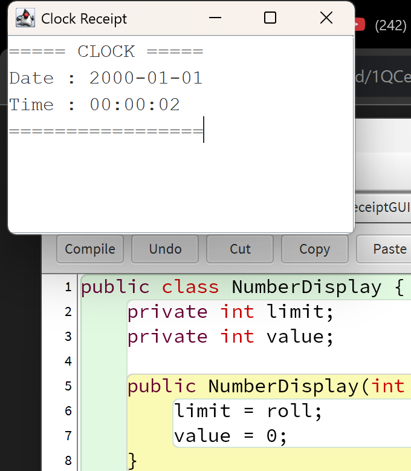

Kali ini saya diberikan tugas oleh pak fajar untuk membuat kode untuk Digital clock dengan menggunakan bahasa Java.
pertama-tama saya membuat kode nya di bluej terlebih dahulu.
-

-
kode kode yang saya buat akan saling terhubung

-
lalu kita test.

- 
kode yang saya buat dapat dilihat di.
kira kira seperti itu hasil digital clock saya, belum saya sesuaikan tanggal dan tahunnya